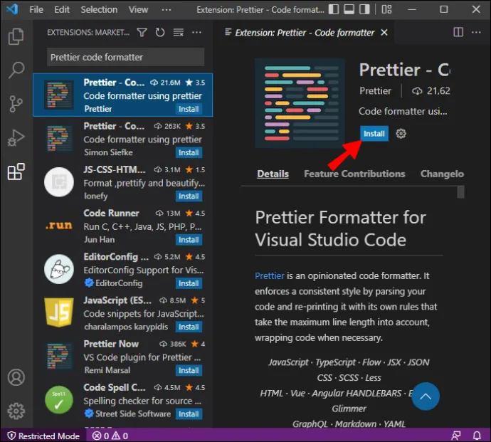
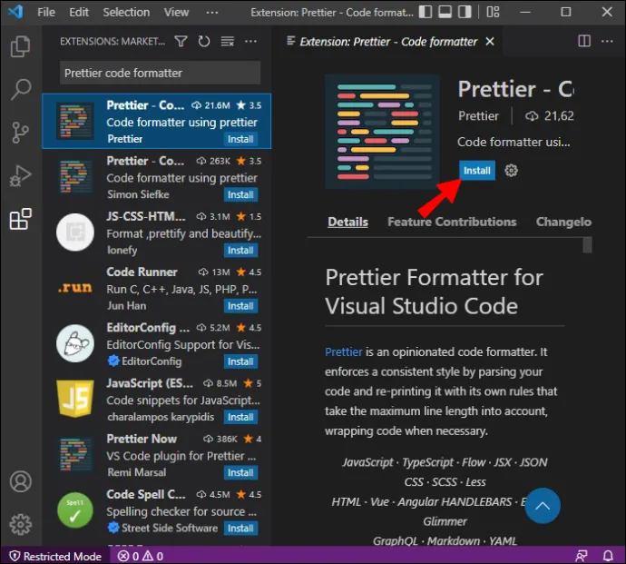

Bienvenido!
Requisitos para el curso:
Es requisito para la correcta adquisición de los contenidos, habilidades y destrezas de la asignatura tener buena capacidad de: lectura comprensiva de textos en castellano e inglés, búsqueda e identificación de bibliografía y redacción de memorias en lengua castellana o inglesa asi como tambien matematica basica, lógica y razonamiento.


 
